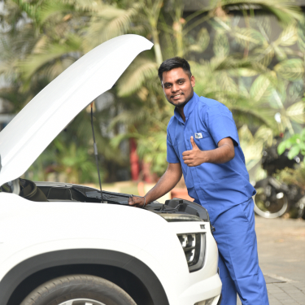
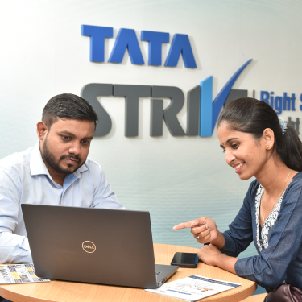
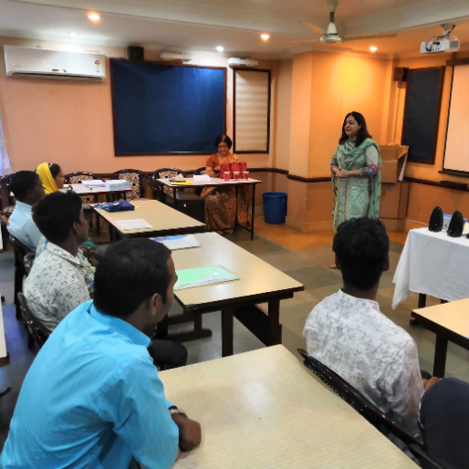
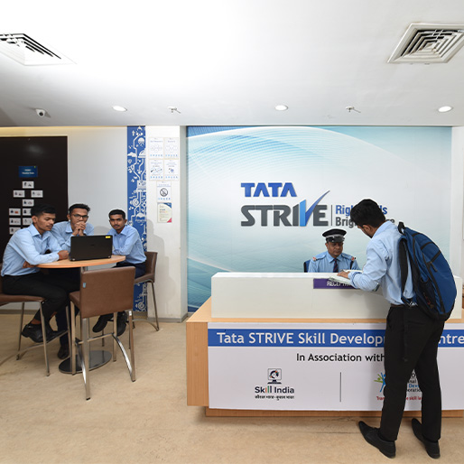
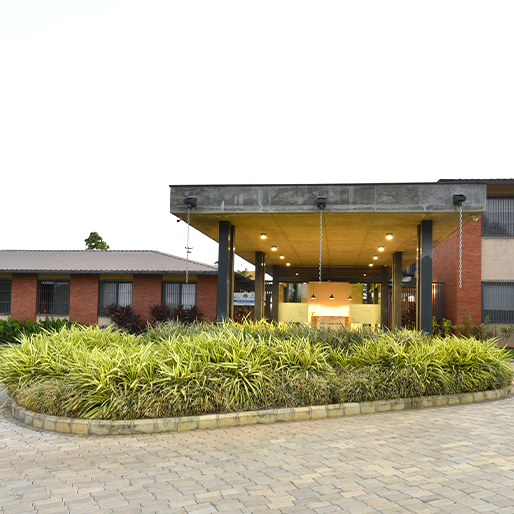

At Tata STRIVE, we provide youth from underprivileged communities access to quality skill training with an aim to enable livelihood linkages. As an outcome focused organization, we aim for Employment, Entrepreneurship or Enhanced Employability through our Domain and Soft Skills training. The delivery model incorporates the right mix of pedagogy, methodology and technology suited to the target audience. We are focused towards paving a way for the youth to transition effortlessly into the digital economy of tomorrow through our quality interventions
Tata STRIVE also focuses on impacting the quality of training in the larger ecosystem, this is achieved by training of trainers, sharing relevant training assets and technology with like-minded partners. With our national footprint and together with our large partner network we will continue to impact the lives of millions of youth in the country.

Enabling Jobs and Livelihoods
With carefully curated training programmes, Tata STRIVE has touched many lives by providing...
Enhancing Employability
Our philosophy at Tata STRIVE has always been to provide holistic training to...

Create Career Awareness and Counsel
Tata STRIVE has from the start promoted the need for informed career choices...

Improving Quality of Ecosystem
The Skill Development ecosystem is in need of quality improvements. Tata STRIVE

Tata STRIVE Skill Development Centres (TSSDC)
These are the best-in-class multi-skilling, multi-domain centres which have standardized infrastructure and brand design, content,...

Tata STRIVE Extension Centre (TSEC)
Tata STRIVE Extension Centres (TSEC) are smaller centres that focus on fewer industry domains, while...
Tata STRIVE Implementation Partners (IP)
Tata STRIVE works with multiple Implementation Partners (IP), who help us expand our reach. They...
Capacity to train over
2,00,000
youth annually
70%
Learners are below
12th std.
54%
SC/ST/OBC
27% Women
enrolled across all centres
37,453
Enabled Jobs or Livelihood
2,75,355
Enhanced Employability
8,866
Created Career Awareness and Counselled
2,03,829
Improved Quality of Skill Development
Based on learnings from the Skill Development sector and the specific challenges and gaps that existed, Tata STRIVE developed an ‘onboarding- training-placement’ model, crafting an experience called the ‘Tata STRIVE Way’ to address challenges and equip youth for the end goal of employment or entrepreneurship. The Tata STRIVE way has 3 levers – pedagogy relevant to our target group, defined methodology for each step of the skilling value chain, and technology providing replicability, scalability and measurability. We built to deliver on the quality and scale expected from the house of Tata. And the impact is visible - our mission of impacting 1 Million by 2022 was achieved in March 2022. In Tata STRIVE centres, we are clearly reaching our intended target groups – SC/ST/OBC/Women, with clear outcomes of placement that are well above industry average.

Pedagogy
At Tata STRIVE, the faculty is a coach, not a trainer. A team of well-qualified and expert professionals...
READ MORE

Methodology
Tata STRIVE has designed an exclusive methodology to help youth make a more informed career choice.
READ MORE

Technology
With the start of our journey in 2015 to reach the ‘ONE MILLION’ mark in 2022, maintaining the quality of...
READ MORE